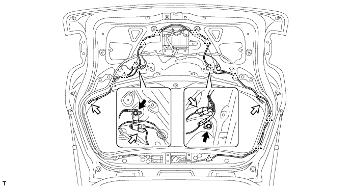
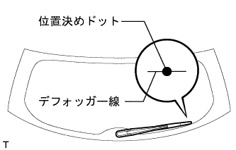

Back Door Reassembly |
| 1. Install Antenna Cord Sub-assembly NO.4 (w/ HDD Navigation System) |

Engage the 12 clamps and temporarily install antenna cord NO.4.
Install the 2 bolts.
Connect each connector and install antenna cord NO.4.
| 2. Install Back Door Outside Garnish Assembly |
 |
Install the back door outside garnish with the 4 nuts.
Connect each connector.
| 3. Install Rear Spoiler Assembly |
 |
Engage the clips and install the rear spoiler assembly.
Tighten the rear spoiler assembly with the 4 nuts.
Connect the connectors.
Install the 2 plug hole covers.
| 4. Install Rear Wiper Motor Grommet |
 |
Apply Denso No. 50 grease to the entire circumference of the lip of the rear wiper motor grommet.
 |
Install the rear wiper motor grommet.
| 5. Install Rear Wiper Motor Assembly |
 |
Insert the shaft of the rear wiper motor assembly into the grommet.
Install the rear wiper motor assembly with the 3 bolts.
Connect the connector.
| 6. Install Rear Wiper Arm & Blade Assembly |
 |
Stop the rear wiper motor assembly at the automatic stop position.
Using a round file or equivalent, clean the wiper arm serrations. (When reassembling)
Using a wire brush, clean the wiper pivot serrations.
 |
Install the rear wiper arm & blade assembly with the rear wiper arm nut so that it is in the position shown in the illustration.
| 7. Install Rear Wiper Arm Head Cap |
 |
Install the rear wiper arm head cap.
Operate the rear wiper while applying water or washer fluid to the glass, and check the wiping condition of the blade and that it does not interfere with the body.
| 8. Install Back Door Lock Assembly |
 |
Install the back door lock assembly with the 3 bolts.
Connect the connector.
| 9. Install Back Door Trim Panel Assembly |
 |
Engage the 11 clips to install the back door trim panel assembly.
Install clip (A).
| 10. Install Back Door Inside Handle |
 |
Engage the 4 claws to install the back door inside handle.
| 11. Install Back Door Side Garnish LH |
 |
Engage the clips and claws to install the back door side garnish LH.
 |
Align the guide position, and engage the 2 claws to install the package tray trim garnish hook.
 |
Engage the pin of the package tray trim garnish hook.
| 12. Install Back Door Side Garnish RH |
| 13. Install Back Door Trim Panel Assembly Upper |
 |
Engage the 4 clips and 4 claws to install the back door trim panel assembly upper.
| 14. Camera Optical Axis Adjustment |
)